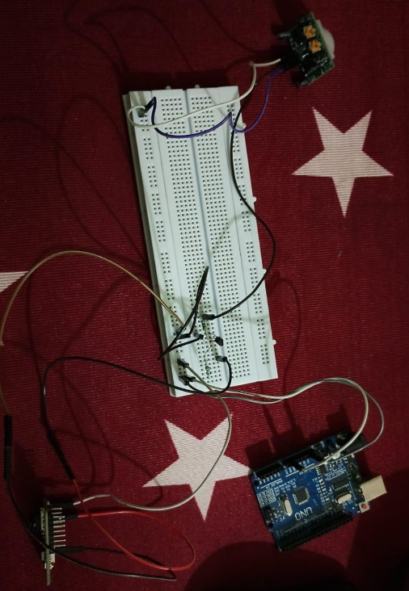

Project Overview
Wildlife Poaching Detection is a real time poaching detetction initiative, which detects poaching during day and night time as well, and gives Alerts. It was done using YOLO Model. This Project was selected by the KSCST and Karnataka Govt is funding our project.
There are 3 majour tasks in this project :
- Human Detection (for both Day and Night Time using YOLO Model)
- Weapon Detection (YOLO Model)
- Animal Classification (YOLO Model, Resnet18 Model, PyTorch)
To make poaching detection real time, we have used the following sensors for Hardware Setup :
- PIR Sensor : For Motion Detection
- ESP32 Cam : For Capturing Photo
- NPN Transister : It acts as a switch, when PIR Sensor detects motion, it instructs Camera to take picture
- Arduino UNO : For Controlling Sensors
The ESP32 Cam sends the captured photo to the Email via SMTP Protocol, and the device automatically downloads the image attached in the email with the help of imaplib library, and detects for any illegal activity and gives alerts.
Tools Used for the Project
- Python (PyCharm IDE)
- CVAT Tool (Annotating Dataset)
- Arduino Uno (To control sensors for making the project real time)
- PIR (Passive Infrared Sensor)
- ESP32 Cam
Hardware Setup

Attachment
You can view the detailed project report here
Git Hub Link
You can get the code of this project here